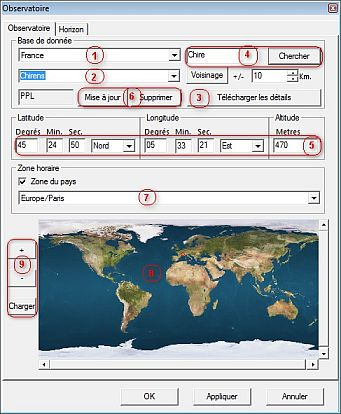
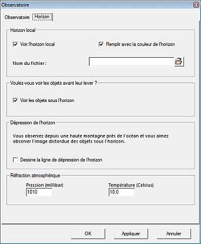

Le réglage de l'observatoire a deux onglets :
 Définit le lieu du Site d'observation, utilisé pour calculer l'azimuth et l'altitude des objets de la carte du ciel.
Il est important de bien choisir le fuseau horaire du Site pour que la différence entre le Temps Universel et le temps local (compte tenu du décalage horaire saisonnier) soit juste. Ceci est fondamental pour avoir une carte et un calcul des éphémérides corrects.
 Vous pouvez simuler l'horizon local par une ligne ou une surface (entre la ligne d'altitude 0° et la ligne d'horizon locale). La définition de l'horizon local est définie dans un fichier par des paires de valeurs en degrés (azimuth, altidude) commençant au Nord (azimuth 0°).
Vous pouvez désirer voir les objets en dessous de la ligne d'horizon.
Vous pouvez simuler la situation de votre Site en altitude par une ligne d'horizon abaissée.
Surtout, vous pouvez spécifier une pression et une température, ce qui permet à CdC de calculer un indice de réfraction athmosphérique local.
{kind=link}
{kind=link}